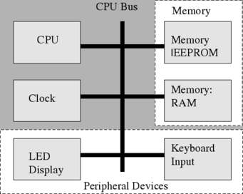

computer architecture main page
links:
computer architecture main page
introduction for computer architecture
What is Computer Architecture
How to Become a Computer Architect
The role of computer engineering in our lives
Modern computer technology requires an understanding of both hardware and software, as the interaction between the two
offers a framework for mastering the fundamentals of computing. The purpose of this course is to cultivate an
understanding of modern computing technology through an in-depth study of the interface between hardware and software.
In this course, we will study the history of modern computing technology before learning about modern computer
architecture and a number of its important features, including instruction sets, processor arithmetic and control,
the Von Neumann architecture, pipelining, memory management, storage, and other input/output topics. The course will
conclude with a look at the recent switch from sequential processing to parallel processing by looking at the parallel
computing models and their programming implications.
